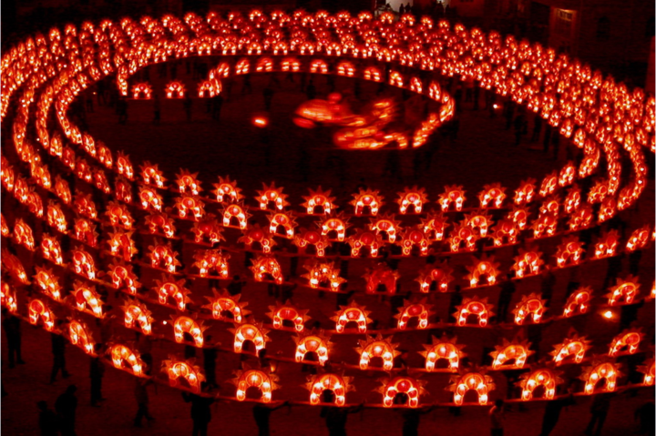

(想获得更多信息请点击图片！)
- 庐山
- 婺源
- 滕王阁
- 望仙谷 .
- 家乡风俗
- 石人桥灯

(想获得更多信息请点击图片！)
-
石人乡位于江西上饶西北方向，是道教圣地，被誉为“天下第三十三福地”，其独特的文化底蕴每年吸引了成千上万的游客。其中石人桥灯就是石人文化的一绝。
作为一种传统民俗活动，石人桥灯由龙头、龙身、龙尾三部分组成。龙头体形高大、威武雄壮，由竹篾扎成，外饰彩纸，高约3米，长约5米，可同时点24支蜡烛，象征一年24个节气。嘴含龙珠，龙珠制作精巧，由36个大小不同的正方形竹篾环叠成正好100个角的球，俗称“百角球”。龙身俗称“子灯”，由灯板连接而成，每块灯板长约2m，宽约0.2m ，在距板端约30厘米处托着两个可点蜡烛的花灯，每块灯板由一人扛抬，整个桥灯可分可合。桥灯连接起来，象征龙的传人薪火相传，子孙满堂。龙尾形似横卧的S，饰有鳞片、龙爪、尾翼略翘。龙头龙尾都饰有彩旗，上书“风调雨顺”、“五谷丰登”、“国泰民安“等语，寄托着劳动人民的美好心愿。
石人乡素有“桥灯之乡”的美誉，村村都有龙灯会，每班桥灯少则数十桥，多则数百桥。千百年来仍然延续古代祭典礼仪，与石人殿独特的“庙会”文化融为一体。每年灯会时，数十班桥灯象一条条巨龙，向道教圣地石人殿汇集，龙头咬着龙尾，龙尾接着龙头，浩浩荡荡，连绵数百米，如蛟龙出海，似银河落地，处处是灯的海洋，姹紫嫣红，十分绚丽。